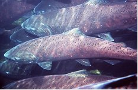

Anadromous fish like salmon and steelhead are essential links in the food chains in the Pacific Northwest. In Washington, there are five species of Pacific salmon - chinook, coho, chum, pink and sockeye. The term "salmonoid" is often used to refer to all fish that share the anadromous lifecycle like salmon steelhead and some trout. The eight salmonoid species in Washington are Chinook, Coho, Chum, Pink, Steelhead, Sockeye, Bull Trout and Cutthroat. All salomoind species are anadromous, meaning they hatch from eggs and mature in freshwater, swim to the sea to feed and grow, then return to their native waters to spawn. This unique lifecycle means salmonoids have a role in a vast array of ecosystems and food webs, all of which suffer when salmon runs are not healthy. In the fall, salmon runs provide nutrition for the ecosystem and a variety of animals, especially bears that are bulking up before hibernation. At sea, Orca populations are infamously struggling due to their traditionally heavy reilance on salmon runs that are now diminishing. The many important functions of salmonoinds, specifically Chinook salmon, make them a keystone species - a species on which other species in an ecosystem largely depend, such that if it were removed the ecosystem would change drastically. For this reason, it is essential for scientists to be able to visualize where salmonoid species are habitating so they can focus their habitat assessment and resoration efforts appropriately. To learn more about the salmonoid species in Washington, click here for an in depth look at their characteristics, fun facts, and vulnerability for each species. Data retrieved from Water Inventory Resources Area 20 Slamon Recover GIS datasets.
Chinook Oncorhynchus tshawytscha
Other names: king, tyee, blackmouth (immature)
Average size: 10-15 lbs, up to 135 lbs
anadromous
a·nad·ro·mous /əˈnadrəməs/
Definition: (of fish) migrating from salt water to spawn in fresh water, as salmon of the genera Salmo and Oncorhynchus.